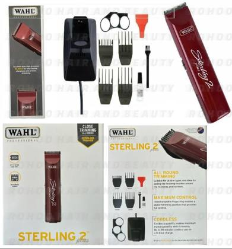
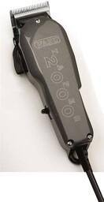
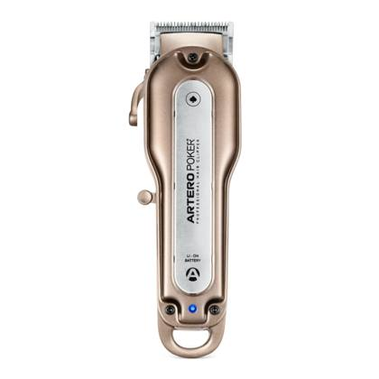
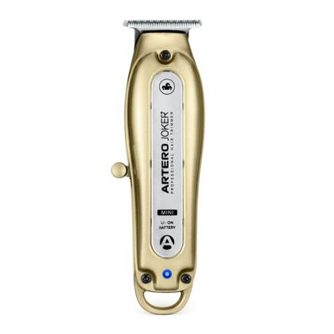
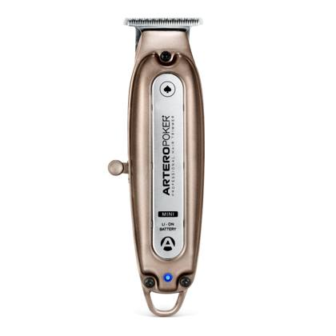
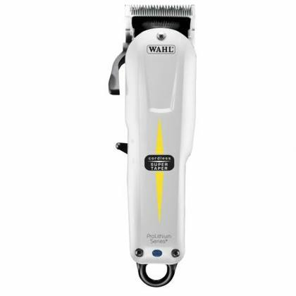
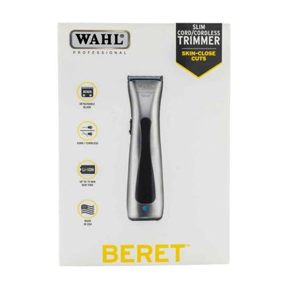
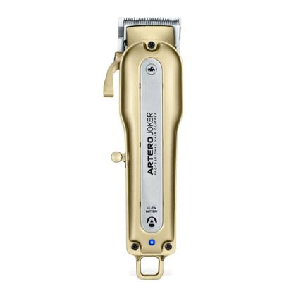
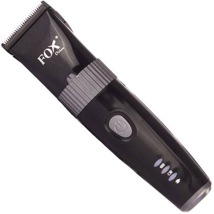

Show:
Hair clippers & trimmers 11 items · 29 pcs

Representative photoHair trimmer
Wahl - Sterling 2 Plus Trymer do Włosów
Wahl Sterling 2 Plus
7 pcsRef #1926

Product photoHair clipper (corded)
Wahl - Taper 2000 Maszynka do Włosów
Wahl Taper 2000
4 pcsRef #1826

Product photoCordless hair clipper
Artero - Maszynka Fryzjerska Bezprzewodo wa Poker+
Artero Poker+
3 pcsRef #2849

Product photoCordless hair trimmer
Artero - Trymer Fryzjerski Bezprzewodo wy Joker Mini+
Artero Joker Mini+
3 pcsRef #2848

Product photoCordless hair trimmer
Artero - Trymer Fryzjerski Bezprzewodo wy Poker Mini+
Artero Poker Mini+
3 pcsRef #2850

Product photoCordless hair clipper
Wahl - Super Taper Cordless Maszynka do Włosów
Wahl Super Taper Cordless
2 pcsRef #911

Product photoCordless hair trimmer
Wahl - Beret Black Prolithium Trymer do Włosów
Wahl Beret Prolithium, black
2 pcsRef #1177

Product photoCordless hair clipper
Artero - Maszynka Fryzjerska Bezprzewodo wa Joker+
Artero Joker+
2 pcsRef #2847

Product photoCordless hair clipper
Fox - Orion Bezprzewodo wa Maszynka do Włosów
Fox Orion
1 pcsRef #1922
More items without photo (2)
| Ref | Item | Type | Status | Qty |
|---|---|---|---|---|
| Ref #2642 | Kemei - KM - 2010 GOLD Maszynka do włosów Kemei KM-2010, gold | Hair clipper | New machine | 1 |
| Ref #2653 | Kemei - KM - 735 BLUE Maszynka do włosów Kemei KM-735, blue | Hair clipper | New machine | 1 |
Spare parts for Wahl & Andis machines 19 items · 409 pcs
| Ref | Item | Type | Status | Qty |
|---|---|---|---|---|
| Ref #2698 | Sprężyna do trymera Andis Slimline Pro Li For Andis Slimline Pro Li trimmer | Spring | Spare part | 74 |
| Ref #2261 | Śruby do maszynki Wahl For Wahl clippers | Screws | Spare part | 72 |
| Ref #2260 | Pokrywa silnika do maszynki Wahl For Wahl clippers | Motor cover | Spare part | 69 |
| Ref #2699 | Listwa Wewnętrzna do trymera Andis Slimline Pro Li For Andis Slimline Pro Li trimmer | Inner strip | Spare part | 24 |
| Ref #2697 | Docisk ostrza do trymera Andis Slimline Pro Li For Andis Slimline Pro Li trimmer | Blade clamp | Spare part | 23 |
| Ref #3047 | Bateria do maszynki Wahl 3400 mAh 3400 mAh, for Wahl cordless clippers | Battery | Spare part | 21 |
| Ref #2696 | Włącznik do trymera Switch Andis Slimline Pro Li For Andis Slimline Pro Li trimmer | Switch | Spare part | 20 |
| Ref #2701 | Śruby do Trymera Andis Slimline Pro Li For Andis Slimline Pro Li trimmer | Screws | Spare part | 19 |
| Ref #2766 | Obudowa do Maszynki Wahl Magic Clip Cordless For Wahl Magic Clip Cordless | Housing | Spare part | 18 |
| Ref #2694 | Silnik do trymera Andis Slimline Pro Li For Andis Slimline Pro Li trimmer | Motor | Spare part | 14 |
| Ref #3588 | Mocowanie Ostrza do Maszynki Wahl For Wahl clippers | Blade mount | Spare part | 10 |
| Ref #2695 | Układ zasilający do trymera Andis Slimline Pro Li For Andis Slimline Pro Li trimmer | Power board | Spare part | 10 |
| Ref #2685 | Andis - Obudowa do Trymera Slimline Pro Li Różowa Andis Slimline Pro Li, pink | Housing | Spare part | 9 |
| Ref #2686 | Andis - Obudowa do Trymera Slimline Pro Li Złota Andis Slimline Pro Li, gold | Housing | Spare part | 8 |
| Ref #2763 | Prowadnica do Docisku Ostrza Maszynek Wahl For Wahl clippers | Blade tension guide | Spare part | 7 |
| Ref #2687 | Andis - Obudowa do Trymera Slimline Pro Li Srebrna Andis Slimline Pro Li, silver | Housing | Spare part | 6 |
| Ref #1897 | Wahl - Nóż do maszynki WAHL Beretto All - in - One For Wahl Beretto (all-in-one blade) | Replacement blade | Spare part | 2 |
| Ref #2259 | Układ zasilający do maszynki Wahl For Wahl clippers | Power board | Spare part | 2 |
| Ref #2762 | Zamiennik Ostrza do trymera Slimline Pro Li D - 8 Compatible blade for Andis Slimline Pro Li (D-8) | Replacement blade | Spare part | 1 |
Attachment guards 4 items · 8 pcs
| Ref | Item | Type | Status | Qty |
|---|---|---|---|---|
| Ref #929 | Wahl - Nasadka Plastikowa do Maszynek nr 4 1/2" 13mm Wahl #4 – 1/2" (13 mm) | Attachment guard | Attachment | 3 |
| Ref #928 | Wahl - Nasadka Plastikowa do Maszynek nr 3 3/8" 10mm Wahl #3 – 3/8" (10 mm) | Attachment guard | Attachment | 2 |
| Ref #927 | Wahl - Nasadka Plastikowa do Maszynek nr 2 1/4" 6mm Wahl #2 – 1/4" (6 mm) | Attachment guard | Attachment | 2 |
| Ref #1908 | Andis - Nasadki Single Magnet DP 2 szt. (2.25 i 4.5 mm) Andis Single Magnet, set of 2 (2.25 + 4.5 mm) | Attachment guard | Attachment | 1 |
Summary of contents
By completeness
| Status | Items | Quantity (pcs) | Share |
|---|---|---|---|
| New machine Complete new machine from warehouse stock; not individually tested. | 11 | 29 | 6.5% |
| Spare part Single spare part for repairing Wahl or Andis machines; the stock list does not say whether a part is original or compatible. | 19 | 409 | 91.7% |
| Attachment Clip-on attachment guard for clippers. | 4 | 8 | 1.8% |
| Total | 34 | 446 | 100% |
By product type
| Product type | Items | Quantity (pcs) | Share |
|---|---|---|---|
| Screws | 2 | 91 | 20.4% |
| Spring | 1 | 74 | 16.6% |
| Motor cover | 1 | 69 | 15.5% |
| Housing | 4 | 41 | 9.2% |
| Inner strip | 1 | 24 | 5.4% |
| Blade clamp | 1 | 23 | 5.2% |
| Battery | 1 | 21 | 4.7% |
| Switch | 1 | 20 | 4.5% |
| Motor | 1 | 14 | 3.1% |
| Power board | 2 | 12 | 2.7% |
| Blade mount | 1 | 10 | 2.2% |
| Cordless hair clipper | 4 | 8 | 1.8% |
| Cordless hair trimmer | 3 | 8 | 1.8% |
| Attachment guard | 4 | 8 | 1.8% |
| Hair trimmer | 1 | 7 | 1.6% |
| Blade tension guide | 1 | 7 | 1.6% |
| Hair clipper (corded) | 1 | 4 | 0.9% |
| Replacement blade | 2 | 3 | 0.7% |
| Hair clipper | 2 | 2 | 0.4% |
| Total | 34 | 446 | 100% |
By categorie
| Categorie | Items | Quantity (pcs) | Share |
|---|---|---|---|
| Hair clippers & trimmers | 11 | 29 | 6.5% |
| Spare parts for Wahl & Andis machines | 19 | 409 | 91.7% |
| Attachment guards | 4 | 8 | 1.8% |
| Total | 34 | 446 | 100% |
Shipping estimate
| Total volume (approx.) | ≈ 0 m³ |
| Total weight (approx.) | ≈ 0 t |
Small lot: about 2–3 cartons, shipped as parcels or on one pallet together with other goods. Estimate from typical box sizes.
Container capacity used: 40′ HC ≈ 68 m³ / 26.5 t, 20′ ≈ 28 m³ / 24 t (practical loading).
Container capacity used: 40′ HC ≈ 68 m³ / 26.5 t, 20′ ≈ 28 m³ / 24 t (practical loading).